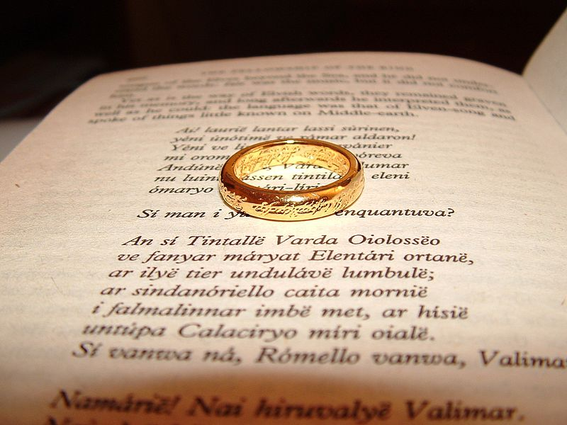
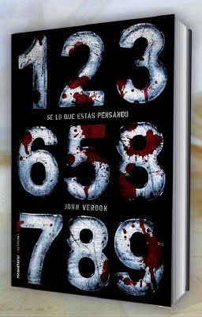

Es una novela de fantasía épica escrita por el filólogo y escritor británico J. R. R. Tolkien.
Su historia se desarrolla en la Tercera Edad del Sol de la Tierra Media,un lugar ficticio poblado por hombres y
otras razas antropomorfas como los hobbits, los elfos o los enanos, así como por muchas otras criaturas reales y
fantásticas. La novela narra el viaje del protagonista principal, Frodo Bolsón, hobbit de la Comarca, para
destruir el Anillo Único y la consiguiente guerra que provocará el enemigo para recuperarlo, ya que es la
principal fuente de poder de su creador, el Señor oscuro, Sauron.
Dicha trilogia, está formada por: La Comunidad del Anillo, Las dos Torres y El retorno del Rey

EL PRÍNCIPE DE LA NIEBLA
La trama transcurre en 1943, en un pueblo a las orillas del Atlántico. Una
familia, los Carver, decide mudarse de casa, huyendo de los peligros de la guerra (estamos en el año
1943, en
plena Segunda Guerra Mundial). La nueva vivienda se encuentra en un pequeño pueblo, a orillas del
río Atlántico.
Aunque llegan buscando la calma, esto es lo último que encuentran, porque entre sus paredes han tenido lugar una
serie de muertes que aún están latentes en el ambiente. Los
temas principales que se tratan son: la importancia del paso del tiempo, así como aprovechar cada segundo; el
entendimiento de las diversas fases por las que pasa el ser humano, el paso de la niñez a una etapa más madura,
la amistad y la magia.
SAGA DE HARRY POTTER
Es una serie de novelas fantásticas, en la que se describen las aventuras del joven aprendiz de magia y
hechicería Harry Potter y sus amigos Hermione Granger y Ron Weasley, durante los años que pasan en el
Colegio
Hogwarts de Magia y Hechicería. El argumento se centra en la lucha entre Harry Potter y el malvado mago lord
Voldemort, quien asesinó a los padres de Harry en su afán de conquistar el mundo mágico. Sus siete libros
són:
Harry Potter Y la piedra flisofal,
Harry Potter Y la cámara secreta,
Harry Potter Y el Prisionero de Azkaban,
Harry Potter Y El Cáliz de fuego,
Harry Potter Y la Orden del Fénix,
Harry Potter Y El Príncipe Mestizo y
Harry Potter Y Las Reliquias de la Muerte.
SAGA JUEGO DE TRONOS
La historia de Canción de hielo y fuego se sitúa en un mundo ficticio medieval, principalmente en un
continente llamado Poniente pero también en un vasto continente oriental, conocido como Essos. La mayor
parte
de los personajes son humanos, pero a medida que la serie avanza aparecen otras razas. Hay tres
líneas
argumentales en la serie: la crónica de la guerra civil dinástica por el control de
Poniente entre
varias
familias nobles; la creciente amenaza de los Otros y los salvajes, apenas contenida por un inmenso muro
de hielo
que protege el norte de Poniente; y el viaje de Daenerys Targaryen, la hija exiliada del rey que fue
asesinado
en otra guerra civil quince años antes del comienzo de la serie, quien busca regresar a Poniente a
reclamar sus
derechos. Estas tres historias interactúan entre sí y son extremadamente codependientes.
SÉ LO QUE ESTÁS PENSANDO
Un hombre recibe una carta que le urge a pensar en un número, cualquiera. Cuando abre el pequeño
sobre que
acompaña al texto, siguiendo las instrucciones que figuran en la propia carta, se da cuenta de que
el número
allí escrito es exactamente en el que había pensado. David Gurney, un policía que después de 25 años
de servicio
se ha retirado al norte del Estado de Nueva York con su esposa, se verá involucrado en el caso
cuando un
conocido, el que ha recibido la carta, le pide ayuda para encontrar a su autor con urgencia. Pero lo
que en
principio parecía poco más que un chantaje se ha acabado convirtiendo en un caso de
asesinato
que además guarda
relación con otros sucedidos en el pasado. Gurney deberá desentrañar el misterio de cómo este
criminal parece
capaz de leer la mente de sus víctimas en primer lugar, para poder llegar a establecer el patrón que
le permita
atraparlo.
